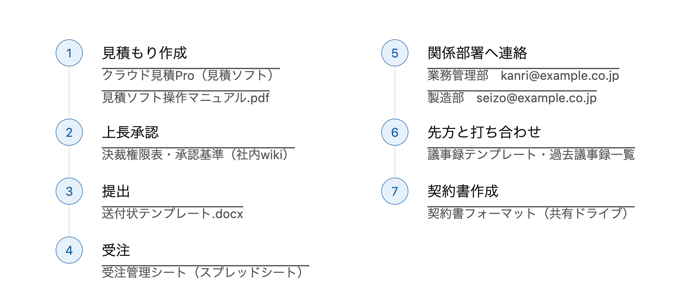
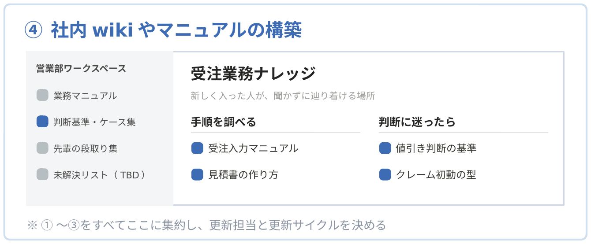
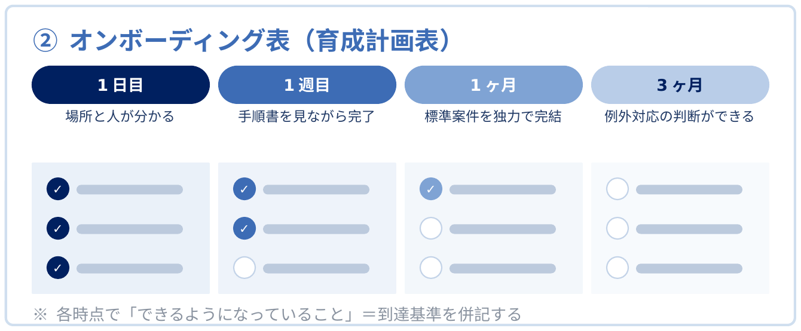
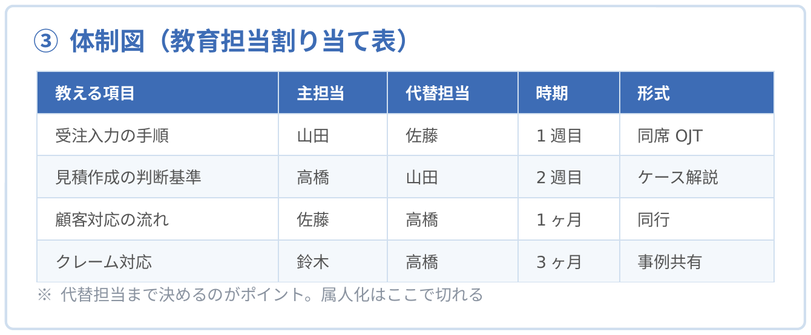

Services
Who we are
S.sentiaは、感覚や経験でおこなわれてきた日々の業務を言語化し、「人が入れ替わっても業務が止まらない」「未経験者でも育てられる」組織の仕組みをつくる、業務プロセス改善コンサルタントです。属人化を解消し、人材育成の体制を整えることで、急な離脱にも、急な拡大にも耐えられる組織をつくります。
仕組みが整うと、組織はこう変わります。
属人化リスクの解消
急な離脱でも
業務が止まらない
採用の幅が広がる
未経験者でも
採用できる
マネージャーの
管理負荷の軽減
手直し・クレーム対応の削減
他店舗展開・大量採用
教育の質を落とさずに
拡大対応できる
Difference
研修会社が提供するのは、どの会社にも当てはまる「汎用知」。私たちが提供するのは、貴社の現場にしかない「自社固有知」です。貴社の手順・判断基準・先輩の段取りを引き出して言語化し、貴社だけの教材として社内に残します。
どの会社にも当てはまる知識・スキル
貴社の現場にしかない知識・判断
Process
部署・役割ごとに、全業務を洗い出します。まず「どんな仕事があるか」だけを一覧化し、深掘りは症状が判明してから、必要な業務にだけおこないます。

業務ごとに、いま何が起きているかを見立てます。「手順がないのか」「伝わっていないのか」「教える人がいないのか」——症状によって、打ち手が変わります。
症状 1手順がどこにもない
手段：社員へのヒアリング
頭の中にある判断・自分流を引き出す
→ 打ち手 A. 社内wikiの整備
症状 2進め方が分からない
手段：関連資料の回収
既存の手順書・帳票・実績を突き合わせる
→ 打ち手 B. オンボーディング表の整備
症状 3教える人が決まっていない
手段：担当とスキルの棚卸し
誰が何をできるか／教えられるかを一覧化
→ 打ち手 C. 教える体制図の整備
症状 4手順そのものに無駄が多い
手段：業務のレコーディング
実作業を録画し、時間と手戻りを計測する
→ 打ち手 D. AI・ツールによる効率化
Package
打ち手は単品売りではありません。診断で特定した症状に応じて組み合わせ、人材育成のパッケージとしてご提供します。すべての成果物は、貴社の実際の業務から作られます。

打ち手 A
新しく入った人が、聞かずに辿り着ける。
手順・概念・判断・先輩の自分流を言語化して格納します。更新担当と更新サイクルまで決めて、使われ続ける形にします。

打ち手 B
「3ヶ月後にできていること」が明文化されている。
1日目・1週目・1ヶ月・3ヶ月と、期間別の順路と到達基準を設計します。本人が自己チェックできる形にするのが要点です。

打ち手 C
主担当と代替担当が決まっている。属人化はここで切れます。
教える項目ごとに、主担当・代替担当・時期・教え方まで割り当てます。「その都度、誰かが教える」状態を終わらせます。
打ち手 D
無駄の多い手順は、仕組み化の前に効率化する。
実作業の録画から時間と手戻りを計測し、無駄が多い手順はAI・ツールで効率化してから仕組みに落とし込みます。
Subsidy
研修費用は、人材開発支援助成金の対象となる場合があります
厚生労働省の人材開発支援助成金には、事業展開や業務の変化に対応する人材の育成を支援するコースが設けられています。要件・支給額・申請の時期は年度や事業所の状況によって異なるため、御社が対象となるかどうかは個別の確認が必要です。
生成AI活用セミナー（札幌・参加無料）のご案内 →※ S.sentiaがご提供するのは研修そのものです。助成金の申請手続きの代行および申請書類の作成支援は社会保険労務士の独占業務にあたるため、当社ではおこないません。ご希望の場合は、提携する社会保険労務士をご紹介いたします。
Technology
つくった仕組みは、日々の業務で回り続けてはじめて意味を持ちます。新しいツールをむやみに増やすのではなく、すでにお使いの基盤の上に構築します。
Microsoft 365 / Google Workspace / Notion を基盤に、業務をまたいでAIが使える環境を整えます。
定型的な業務は、AIエージェントに任せられる形に設計します。
既存ツールで足りない部分は、業務に合わせた専用の仕組みを開発します。
全案件、代表が直接担当します。担当者によるばらつきはありません。
※ 無料診断に費用は一切かかりません。オンライン（Google Meet / Microsoft Teams）でも承ります。